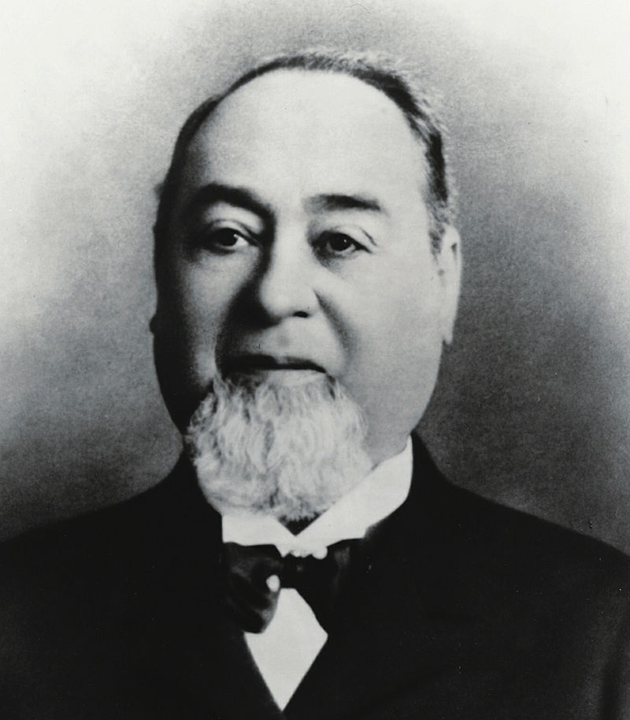

Levi Strauss
- born Löb Strauss in Buttenheim, German Confederation
- was a businessman with the first manufactory that made jeans
- in 1847 he went to the USA and opened a small shop in San Francisco in 1853, the cornerstone of a corporation
- with the tailor Jacob W. Davis, who was the first to make blue jeans from denim, he had sold the new trousers in his company Levi Strauss & Co. (Levi's) since 1871
- in 1873 he patented the robust, blue work trousers, which were mainly made for gold diggers
- but the work trousers became a huge fashion trend, everyone wanted blue jeans
- the business that started as a small shop in San Francisco now has more than 14,000 employees